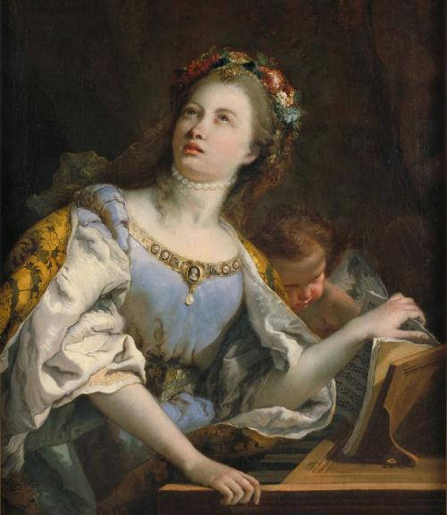

- 油画介绍
油画（an oil painting；a painting in oils）是以用快干性的植物油（亚麻仁油、罂粟油、核桃油等）调和颜料，在画布亚麻布，纸板或木板上进行制作的一个画种。作画时使用的稀释剂为挥发性的松节油和干性的亚麻仁油等。画面所附着的颜料有较强的硬度，当画面干燥后，能长期保持光泽。凭借颜料的遮盖力和透明性能较充分地表现描绘对象，色彩丰富，立体质感强。油画是西洋画的主要画种之一。
- 油画历史
油画的前身是15世纪以前欧洲绘画中的蛋彩画，后经尼德兰画家扬·凡·艾克(Jan Van Eyck),(1385年-1441年)对绘画材料等加以改良后发扬光大。后人因扬·凡·艾克对油画艺术技巧的纵深发展做出的独特贡献，誉其为“油画之父”。
- 油画技法
油画颜料厚堆的功能和极强的可塑性是其他画种无法比拟的
- 挫-------根部落笔着色
- 拍-------画面上轻轻拍打
- 扫-------另一种颜色扫上去
THEpainting in oils arts话说油画
油画逐渐成为西方绘画史中的主体绘画方式，存世的西方绘画作品主要是油画作品。随着时间的发展油画逐渐生活化，其中最著名的就是《蒙娜丽莎》表现的一个普通妇女并广为流传。19世纪后期，由于科技发展，许多新材料应用于油画领域，如丙烯颜料，油漆等。从18世纪开始，油画艺术也同样在社会、文化、科技等多元因素的冲击下，有了翻天覆地、摧枯拉朽的变化。
中国的油画最早出现在棺椁器具之中，据周礼、汉书等文献所记，二千多年前的中国已有用“油”绘画的历史。通常的说法是1581年利玛窦携天主、圣母像到中国后，才开始了中国的油画，其中一幅“木美人”作品，虽历时五百年，仍依稀可见画风的古朴厚重。
清末维新戊戌变法后，许多青年学子先后赴英国、法国、日本等国学习西洋油画，他们中有：李铁夫、冯钢百、李毅士、李叔同（弘一法师）、林风眠、徐悲鸿、刘海粟、颜文梁、潘玉良、庞薰琹、常书鸿、吴大羽、唐一禾、陈抱一、关良、王悦之、卫天霖、许幸之、倪贻德、丁衍庸等。这些人归国后带来了西方及日本先进的教学方法及理念，如1911年西洋归国的周湘创办了中国第一所美术学校；1912年刘海粟创办上海图画学术院，并第一次起用人体模特写生；1927年，中央大学开设艺术科（徐悲鸿任主任）等。
花仙子xing.org1^
- 后印象派的重要的画家---------凡高
- 自幼有非凡的艺术才能的画家---------毕加索
- 俄罗斯写实主义绘画大师---------列宾
0ONE TWO
THREE FOUR FIVE
painting in oils arts
THREE FOUR FIVE
painting in oils arts
“Chinese oil paint ings first app eared i n co ffins,More than a than two thousand year than years ago.”